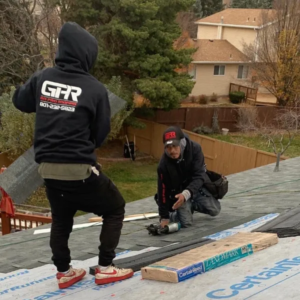
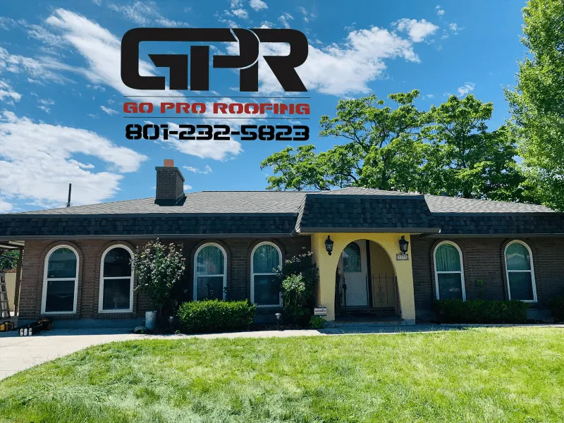
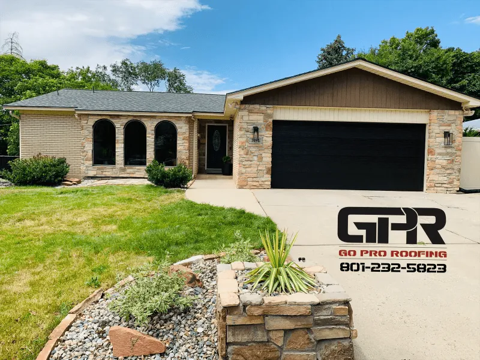

Expert Roofing Services for Utah Homes and Businesses
Go Pro Roofing is West Valley City’s trusted choice for roof repair, inspection, and replacement services. As a certified and insured roofing contractor, we provide reliable, long-lasting solutions for all roof types—including asphalt shingles, metal roofing, flat roofs, and TPO systems. From minor leaks to complete roof overhauls, our local experts serve homeowners and businesses throughout the Salt Lake Valley with precision, transparency, and pride. Let us restore your peace of mind with top-quality service backed by unmatched warranties.
Master Roofer Certified
Owens Corning & GAF Recognized
5-Year Workmanship Warranty
50-Year Material Warranty
Latino-Owned & Locally Operated
Don’t Let Small Roof Problems Turn Into Big Expenses
When left unaddressed, even small roof issues can escalate—leading to water damage, mold growth, structural decay, skyrocketing repair bills, or even insurance claim denials. Waiting until a crisis hits costs more in time, money, and stress. Whether it’s a leaking roof or damaged flashing, fast, professional repairs protect your home and save you thousands in future expenses.
What You Get When You Choose Go Pro Roofing

Certified Local Experts
Our team is Master Roofer Certified and trained by top brands like Owens Corning and GAF.
Long-Lasting Materials
We use only premium-grade materials built to withstand Utah’s sun, snow, and storms—backed by up to 50-year warranties.
Fast Turnaround
Need urgent help? We deliver quick inspections and efficient repairs to minimize stress and damage.
Honest, Hands-On Service
No pushy sales. Just straightforward estimates, clear communication, and the kind of service you’d expect from neighbors.
Why Choose Go Pro Roofing?
Your Trusted Local Roofing Partner in Utah
Over 15 Years of Roofing Experience
Master Roofer Certified
Fully Insured & Locally Owned
5-Year Workmanship Warranty
Up to 50-Year Manufacturer Warranties
Owens Corning & GAF Partner Contractor
5-Star Reviews from Hundreds of Utah Homeowners
Transparent Pricing—No Hidden Fees
Explore Our Roof Repair and Maintenance Services
Service | Description |
Roof Repairs | Fixing leaks, damaged shingles, and structural issues fast |
Roof Inspections | Certified inspections for peace of mind or home sales |
Roof Replacement | Full tear-offs and replacements using top-tier materials |
Metal & TPO Roofing | Durable roofing systems for flat or low-slope structures |
Roof Maintenance | Ongoing care to extend roof life and prevent problems |
Storm & Hail Damage Roof Replacement
If your roof was hit by hail or wind, you may qualify for an insurance roof replacement—and the sooner you act, the better. Delaying repairs after a storm can lead to more severe interior damage, structural issues, and even voided warranties. At Go Pro Roofing, we offer a thorough inspection and documentation process to evaluate the extent of storm or hail damage. Our experienced team will then work directly with your insurance provider to help secure the coverage you’re entitled to. We know the process inside and out, so you can focus on restoring your home or business with confidence and minimal stress.
What Our Clients Say About Our Work
Posted on Google Misty Jensen Trustindex verifies that the original source of the review is Google. Really appreciated the thorough explanation of my existing roof and the things taken into consideration during the replacement. They took tons of photos before/during/after that were shared with me on a Google link which made it easy to share with my insurance company. My roof took one day which was glorious! I had gotten a few bids and they were not the cheapest but somewhere in the middle, the difference was the quality of things like drip edge, flashing addressing old pipes. None of the other companies even talked about that stuff so costing a little more (wasn't a lot) was totally worth it. They even removed my old swamp cooler. My garage is detached so we didn't do it at the same time, when I do I'll definitely use them again. Posted on Google Jeannie Raquel Trustindex verifies that the original source of the review is Google. Exceptional experience with this company from beginning to end of the process, which is unfortunately very rare these days. Showed up on time and did excellent work. Pointed out items that other companies who bid the job missed, and didn’t try to add them on simply to charge me more. This company is experienced, affordable and does beautiful work. Highly recommended in every way. Posted on Google Tyler Blas Trustindex verifies that the original source of the review is Google. These guys showed up when they said no hassle got down to work cleaning while working kept my yard clean while working had my roof stopped and shingled in one day I can’t say enough about them they are a great company to work with Posted on Google Robin H Trustindex verifies that the original source of the review is Google. Fast and thorough repair. Fast responses to questions. They fixed a problem covered up by another company. Posted on Google Gini Monson Trustindex verifies that the original source of the review is Google. Jose was quick, efficient for the work he did. Also he was respectful of the plants he had to reach over to complete the job. And he cleaned everything up afterwards. Loved it and would recommend him to any and all who need work done!!! Posted on Google Jonathan Hall Trustindex verifies that the original source of the review is Google. Jose and the crew were professional and efficient and I would highly recommend them! Posted on Google HR G Trustindex verifies that the original source of the review is Google. We had Jose from Go Pro Roofing come out to give us a bid on doing Leaf Gutters. He sent me a bid which was very reasonable and we booked our appt for May 2024. He cleaned out the gutters before installing the gutters and took pictures of everything before, after and during the install. He showed up when he said he would and cleaned up after. He did a very professional job. Posted on Google Trevor Adrian Trustindex verifies that the original source of the review is Google. It’s unfortunate roofs don’t need to be replaced often, I would use Jose and his crew every time and refer them to everyone I know without hesitation. Jose took time to teach, explain, and answer questions. Throughout the process, and even with random things after, Jose went above and beyond. They were fast, clean, and thorough - even the neighbors commented on the speed and attention to detail. Good character, competitive pricing, fantastic work. Posted on Google Brian Draney Trustindex verifies that the original source of the review is Google. Jose and his guys were awesome! We had a leak coming in our front door. They diagnosed the problem and fixed it and several other spots too. Very professional, cleaned up after and they did a great job. Posted on Google karla rivera Trustindex verifies that the original source of the review is Google. Jose is always available! Gives great quality work and is always profesional. He has helped my clients of mine and myself countless times!
Photo Gallery




Common Questions About Roof Repairs in Utah
See Where We Work Across Utah
5291 W Ted Way
West Valley City, UT 84120
Proudly serving West Valley City, Salt Lake City, Taylorsville, Magna, Murray, and surrounding Utah communities.
Ready to Get Reliable Roof Repairs from a Team You Can Trust?
Choosing Go Pro Roofing means putting your home in the hands of experienced, certified professionals who truly care about quality, durability, and your peace of mind. Whether you need fast leak repairs or a full roof replacement, we’re here to make the process stress-free, transparent, and built to last. Let’s protect your home together—starting today.
Proudly Serving West Valley City and Surrounding Communities in Utah.